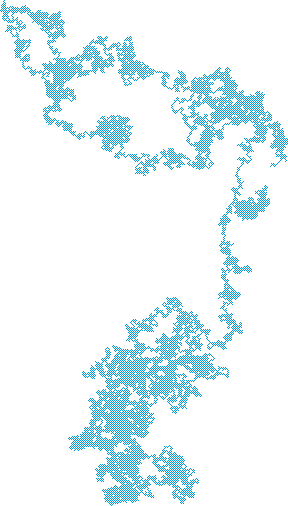

ランダムウォーク実行例  実行結果を見る ソースコード app.ts 解説/アルゴリズム 次に現れる位置が確率的に無作為（ランダム）に決定される運動を可視化したものです。 function walk(): void { // 50%の確率で左右/上下どちらに移動するかを決める tx += p.random() < 0.5 ? -1 : 1; ty += p.random() < 0.5 ? -1 : 1; p.point(tx, ty); } 内部で利用しているアルゴリズム 擬似乱数